Majd egy tucat lenyűgöző helyszín – itthon, közel hozzád!
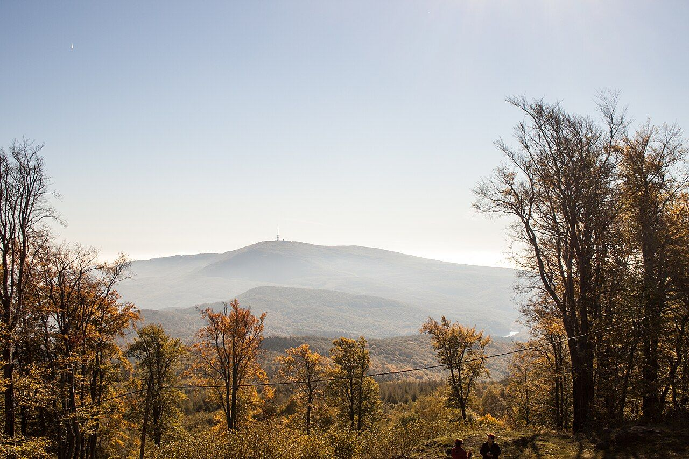
UtazásMagyarország tele van olyan helyekkel, amelyek első látásra is különlegesek, de igazán akkor mutatják meg magukat, ha egy kicsit jobban elidőzöl bennük. Nem kell repülőre ülni vagy napokat utazni – a legjobb élmények sokszor egy hétvégi kiruccanásra vannak.
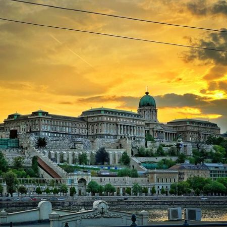
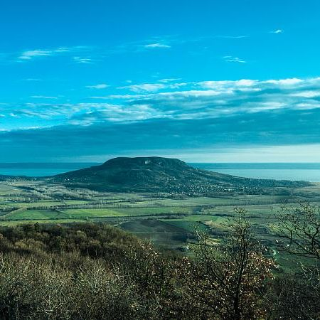
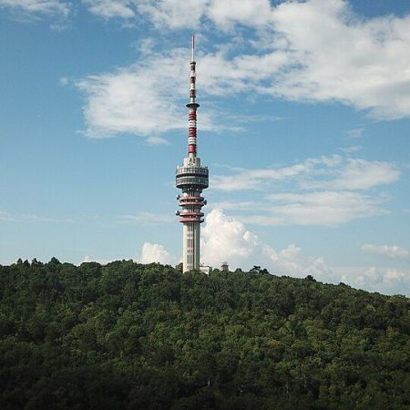
1. Halászbástya
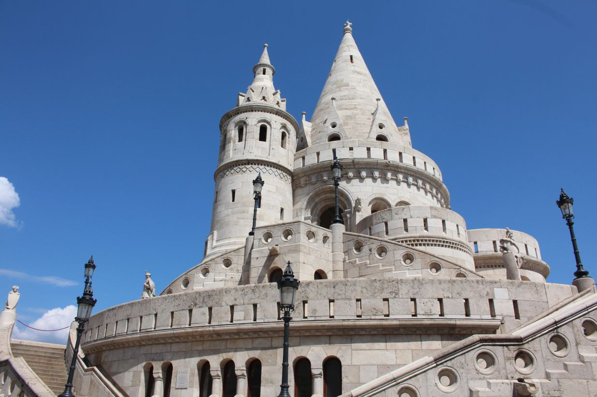
Budapest egyik legismertebb pontja, ahonnan szinte képeslapra illő kilátás nyílik a Dunára és a Parlamentre. A fehér tornyok és a romantikus lépcsők szinte mesebeli hangulatot teremtenek. Napfelkeltekor különösen varázslatos, amikor még alig van turista. Egy lassú séta itt teljesen más arcát mutatja a városnak.
2. Tihany
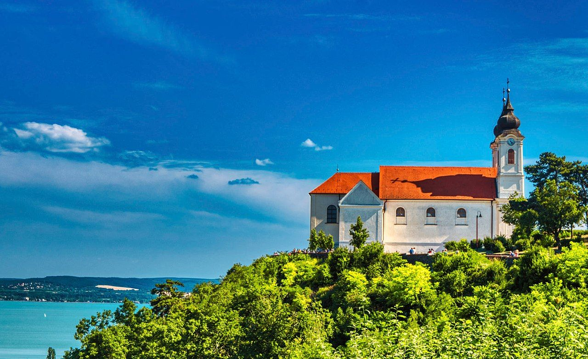
A Balaton egyik legikonikusabb helye, ahol a levendula illata és a panoráma egyszerre hat. A félsziget különleges nyugalmat áraszt, főleg a nyári szezonon kívül. A kis utcák, apátság és kilátópontok mind felfedezésre várnak. Itt könnyű kicsit kiszakadni a rohanásból.
3. Hortobágy
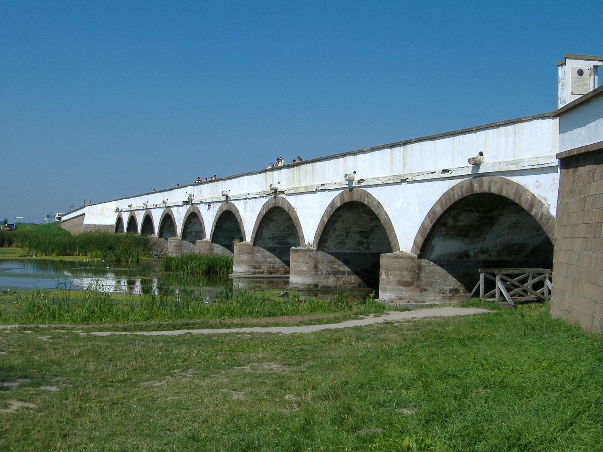
A Hortobágy elsőre talán üresnek tűnik, de pont ez adja a varázsát. A végtelen puszta látványa egészen különleges érzést kelt, mintha megállna az idő. A kilenclyukú híd és a pásztorhagyományok egy másik korszakba repítenek vissza. Ha itt sétálsz, hamar rájössz, hogy a csendnek is van hangulata. Naplementekor pedig az egész táj arany színbe borul, amit nehéz elfelejteni.
4. Lillafüred
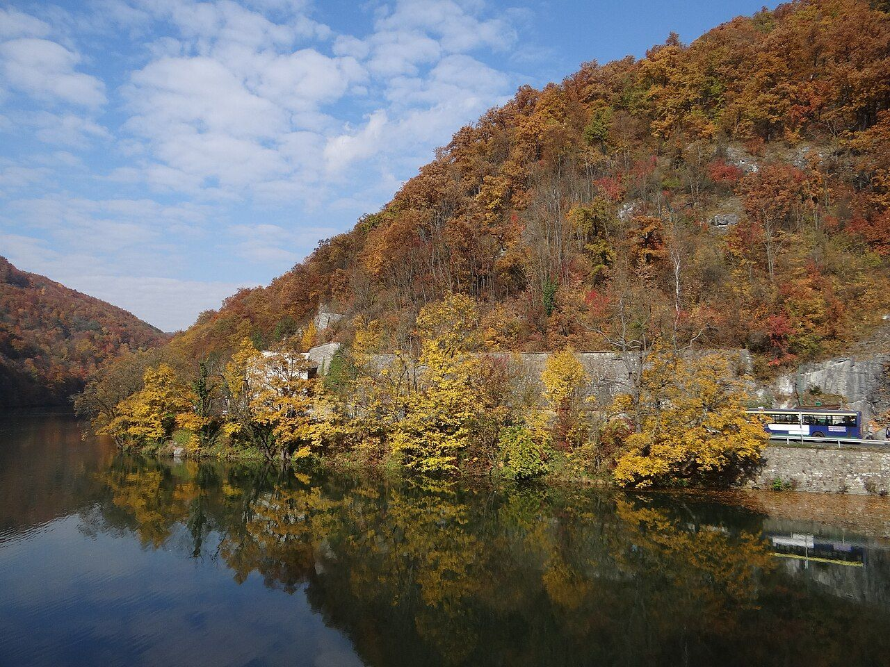
Lillafüred olyan, mintha egy mesekönyvből lépett volna ki. A Palotaszálló, a vízesések és a környező erdők együtt alkotnak egy teljesen varázslatos világot. A Hámori-tó partján sétálva könnyű elfelejteni a hétköznapokat. Egy kisvonatos kirándulás még különlegesebbé teszi az élményt. Ez a hely minden évszakban más arcát mutatja, de mindig lenyűgöző.
5. Tokaj
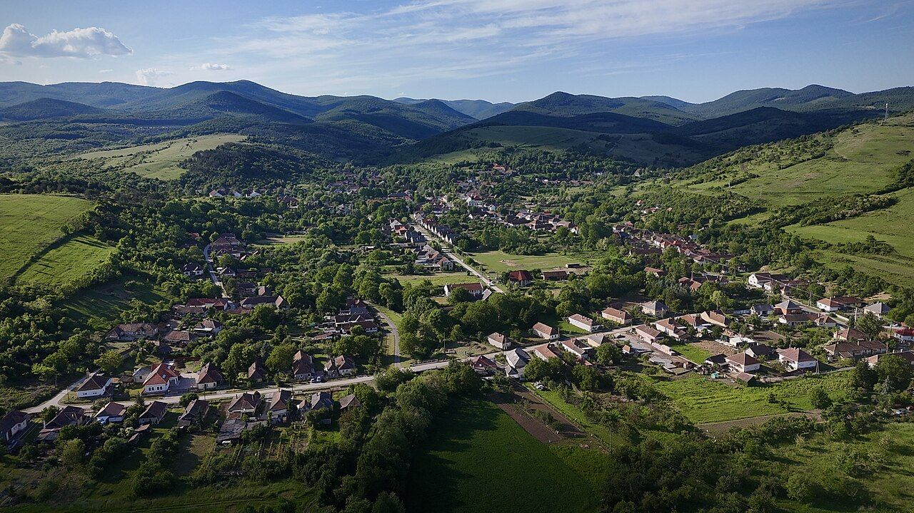
Tokaj nemcsak a borairól híres, hanem a hangulatáról is. A dombok között kanyargó utak és a szőlősorok látványa már önmagában is élmény. Egy borospincébe betérve teljesen más tempóra vált az ember. Itt minden lassabb, nyugodtabb, és sokkal inkább az élvezetről szól. Egy hosszabb hétvége alatt igazán rá lehet hangolódni erre az életérzésre.
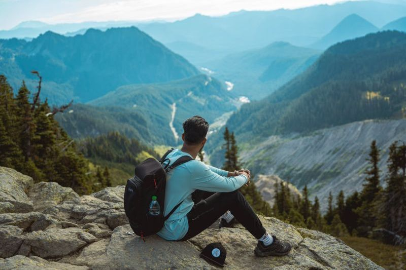
6. Pécs
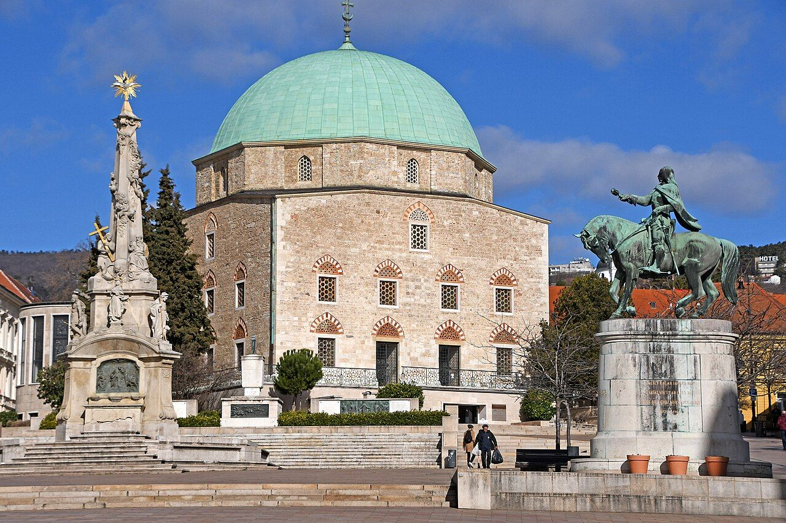
Pécsnek van egy különleges, szinte mediterrán hangulata, amit máshol nehéz megtalálni Magyarországon. A szűk utcák, terek és történelmi épületek mind felfedezésre várnak. A város egyszerre nyugodt és pezsgő, attól függően, hogy merre jársz. Egy délutáni séta itt könnyen estig nyúlhat. Minden sarkon találsz valamit, ami miatt érdemes megállni.
7. Szeged
Szegedet nem véletlenül hívják a napfény városának. A széles sugárutak és a tágas terek egészen más hangulatot adnak, mint egy átlagos város. A Tisza-part különösen jó hely egy esti sétára. Nyáron tele van élettel, fesztiválokkal és programokkal. Egy látogatás után könnyű megérteni, miért szeretnek itt élni az emberek.
8. Esztergom
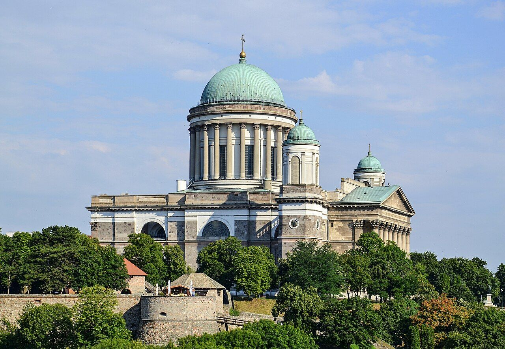
Esztergom már messziről felismerhető a hatalmas bazilikájáról. Ahogy közelebb érsz, egyre inkább érzed a hely történelmi súlyát. A Duna-part és a panoráma együtt igazán különleges látványt nyújt. Egy séta a városban egyszerre nyugodt és inspiráló. Nehéz úgy eljönni, hogy ne akarj visszatérni.
9. Hévíz
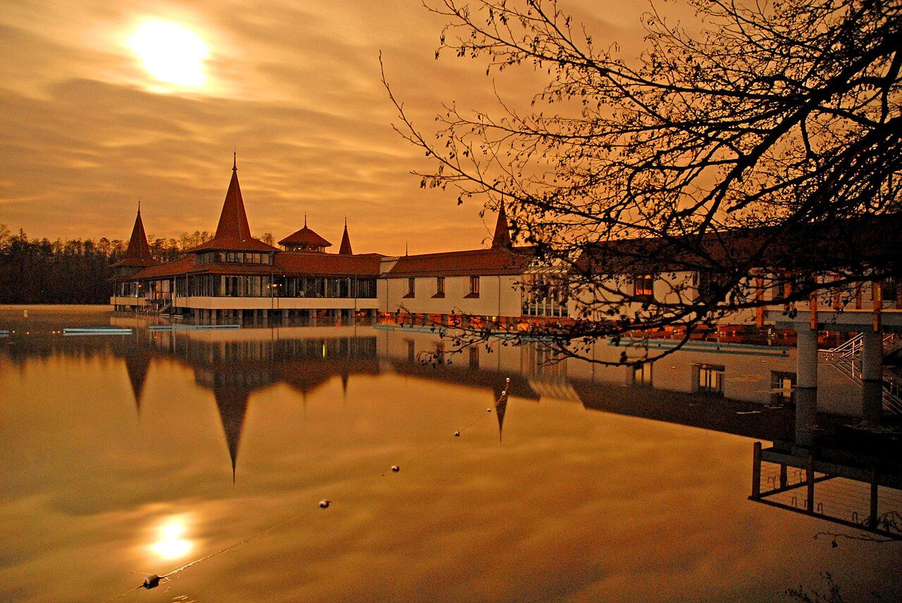
Hévíz teljesen más élményt ad, mint egy hagyományos kirándulás. A termáltó különleges látványa már önmagában megéri az utat. A víz melege és a környezet nyugalma azonnal lelassít. Itt tényleg ki lehet kapcsolni, akár csak pár órára is. Egy fürdőzés után teljesen más energiával indul tovább az ember.
10. Aggtelek
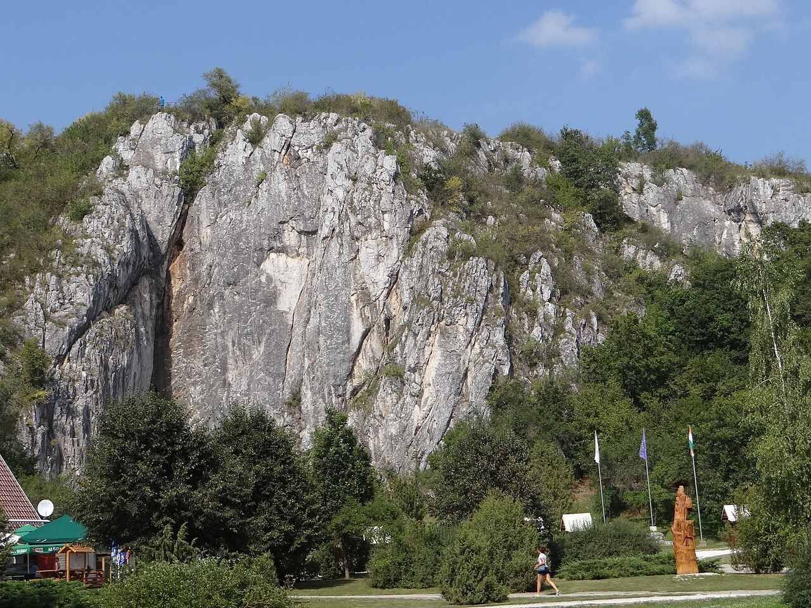
Az Aggteleki-cseppkőbarlang olyan élmény, amit nehéz szavakkal leírni. Ahogy belépsz, egy teljesen más világba kerülsz. A hatalmas termek és különleges formák lenyűgözőek. Idegenvezetéssel járható, ami még izgalmasabbá teszi az egészet. Egy ilyen látogatás után garantáltan más szemmel nézel a természetre.

Novák Anett
2026. március 03. 16:13